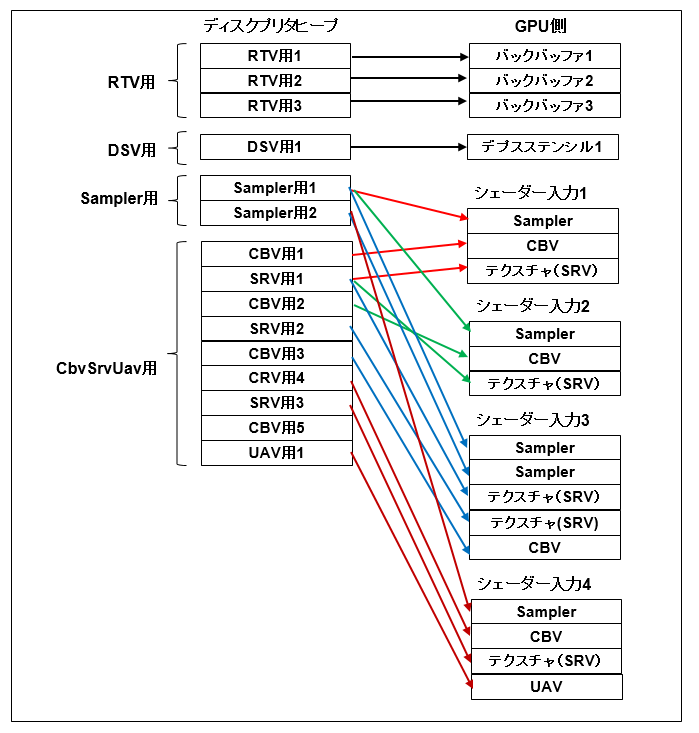

図1201a
3つのオブジェクト（2つの三角形と1つの四角形）が表示され、1つの三角形と四角形は左か右に移動します。
void GameDivece::OnInit()
{
LoadPipeline();
LoadAssets();
}
void GameDivece::LoadPipeline()
{
//ファクトリ
ComPtr<IDXGIFactory4> factory = Dx12Factory::CreateDirect();
//デバイス
m_device = D3D12Device::CreateDefault(factory, m_useWarpDevice);
//コマンドキュー
m_commandQueue = CommandQueue::CreateDefault();
//スワップチェーン
m_swapChain = SwapChain::CreateDefault(factory, m_commandQueue, m_frameCount);
m_frameIndex = m_swapChain->GetCurrentBackBufferIndex();
// デスクプリタヒープ
{
// レンダリングターゲットビュー
m_rtvHeap = DescriptorHeap::CreateRtvHeap(m_frameCount);
m_rtvDescriptorHandleIncrementSize
= m_device->GetDescriptorHandleIncrementSize(D3D12_DESCRIPTOR_HEAP_TYPE_RTV);
//CbvSrvUavデスクプリタヒープ
//(コンスタントバッファとシェーダリソースと順序不定のアクセスビュー)
//CbvSrvUavデスクプリタヒープの数はGetCbvSrvUavMax()により取得する
m_cbvSrvUavDescriptorHeap = DescriptorHeap::CreateCbvSrvUavHeap(GetCbvSrvUavMax());
m_cbvSrvUavDescriptorHandleIncrementSize
= m_device->GetDescriptorHandleIncrementSize(D3D12_DESCRIPTOR_HEAP_TYPE_CBV_SRV_UAV);
//サンプラーデスクリプタヒープ
m_samplerDescriptorHeap = DescriptorHeap::CreateSamplerHeap(1);
}
// RTVとコマンドアロケータ
CD3DX12_CPU_DESCRIPTOR_HANDLE rtvHandle(m_rtvHeap->GetCPUDescriptorHandleForHeapStart());
for (UINT n = 0; n < m_frameCount; n++)
{
ThrowIfFailed(m_swapChain->GetBuffer(n, IID_PPV_ARGS(&m_renderTargets[n])));
m_device->CreateRenderTargetView(m_renderTargets[n].Get(), nullptr, rtvHandle);
rtvHandle.Offset(1, m_rtvDescriptorHandleIncrementSize);
//コマンドアロケータ
m_commandAllocators[n] = CommandAllocator::CreateDefault();
}
}

図1105a（再）
デスクプリタヒープは、GPUとやり取りするビューを引き出しにまとめたようなもの、と考えられます。
GameDivece::GameDivece(UINT frameCount) :
Dx12Device(frameCount,2048)
{
}
m_cbvSrvUavDescriptorHeap = DescriptorHeap::CreateCbvSrvUavHeap(GetCbvSrvUavMax());
namespace DescriptorHeap {
static inline ComPtr<ID3D12DescriptorHeap> CreateDirect(const D3D12_DESCRIPTOR_HEAP_DESC& desc) {
auto device = App::GetID3D12Device();
ComPtr<ID3D12DescriptorHeap> ret;
ThrowIfFailed(device->CreateDescriptorHeap(&desc, IID_PPV_ARGS(&ret)),
L"デスクプリタヒープの作成に失敗しました",
L"device->CreateDescriptorHeap()",
L"DescriptorHeap::CreateDirect()"
);
return ret;
}
//中略
static inline ComPtr<ID3D12DescriptorHeap> CreateCbvSrvUavHeap(UINT numDescriptorHeap) {
//CbvSrvUavデスクプリタヒープ
D3D12_DESCRIPTOR_HEAP_DESC cbvSrvUavHeapDesc = {};
cbvSrvUavHeapDesc.NumDescriptors = numDescriptorHeap;
cbvSrvUavHeapDesc.Type = D3D12_DESCRIPTOR_HEAP_TYPE_CBV_SRV_UAV;
cbvSrvUavHeapDesc.Flags = D3D12_DESCRIPTOR_HEAP_FLAG_SHADER_VISIBLE;
return CreateDirect(cbvSrvUavHeapDesc);
}
//中略
}
m_cbvSrvUavDescriptorHandleIncrementSize
= m_device->GetDescriptorHandleIncrementSize(D3D12_DESCRIPTOR_HEAP_TYPE_CBV_SRV_UAV);
//サンプラーデスクリプタヒープ
m_samplerDescriptorHeap = DescriptorHeap::CreateSamplerHeap(1);
void Scene::OnInit() {
//フレーム数は3
ResetActiveBaseDevice(3);
}